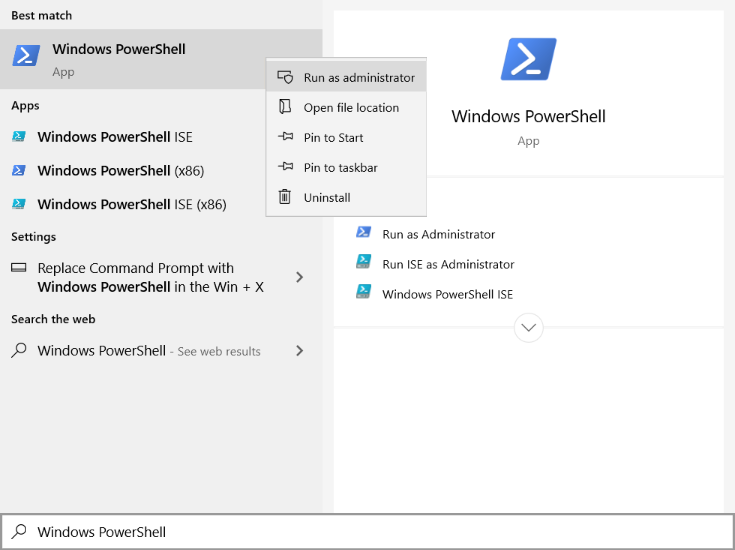

Build and run C++/OpenGL example
- Navigate to the install directory. Then execute the following commands as administrator in "Windows PowerShell"
cd examples/opengl_weaving
mkdir build
cd build
cmake -G "Visual Studio 15 2017 Win64" ..
- To run these command as administrator, open the Start menu, and scroll to "Windows PowerShell", from the right-click menu, select "Run as administrator". 
- Please take into account that you should select the correct input for -G parameter based on the installed Visual Studio on your system.
- Open Visual Studio as Administrator. To do so, open the Start menu, and scroll to Visual Studio, then from the right-click or context menu of Visual Studio, select More > Run as administrator. When Visual Studio starts, (Administrator) appears after the product name in the title bar.
- Then, open example_opengl_weaving.sln located in examples/opengl_weaving/build address in Visual Studio. Build example_opengl_weaving project and run it.
- If the Eyetracker application is running a cube object is expected to be displayed in 3D. If the Eyetracker application is not running the default eye positions will be used. These are identical for the left and right perspective such that a stereo image with zero disparity will be presented. You will only be able to look around the cube in SR if the Eyetracker application is running in the background.
C++/OpenGL example
- The expected behavior of the example is to display a cube object in 3D. This requires the eyetracker and handtracker run simultaneously.
- Class
SREyePairListener is the listener that accept eye pair coordinates from the EyeTracker class.
- To start streaming eye positions SRContext has to be initialized:
508 const double startTime = (double)GetTickCount64() / 1000.0;
511 while (g_srContext ==
nullptr)
523 std::cout <<
"Waiting for context" << std::endl;
529 double curTime = (double)GetTickCount64() / 1000.0;
530 if ((curTime - startTime) > maxTime)
535 bool displayReady =
false;
536 while (g_srContext && !displayReady)
540 if (display !=
nullptr)
544 int64_t width = displayLocation.
right - displayLocation.
left;
545 int64_t height = displayLocation.
bottom - displayLocation.
top;
546 if ((width != 0) && (height != 0))
553 std::cout <<
"Waiting for display" << std::endl;
559 double curTime = (double)GetTickCount64() / 1000.0;
560 if ((curTime - startTime) > maxTime)
Class of WorldObject representing the SR display in real space.
Definition: display.h:31
virtual SR_recti getLocation()=0
Finds the SR monitor and return it's location in the display configuration.
static Display * create(SRContext &context)
Creates an instance of a Display class.
static SRContext * create(NetworkMode mode=NetworkMode::NonBlockingClientMode)
create new SRContext instance
Class of Exception which indicates that a SR Service was not available to connect with.
Definition: exception.h:96
C-compatible integer rectangle representation.
Definition: types.h:107
int64_t top
Top-most border in the rectangle.
Definition: types.h:115
int64_t right
Right-most border in the rectangle.
Definition: types.h:116
int64_t bottom
Bottom-most border in the rectangle.
Definition: types.h:117
int64_t left
Left-most border in the rectangle.
Definition: types.h:114
- The OpenGL library is used to draw objects. For the extensive tutorial on how to visualize objects in OpenGL follow the link. In this guide we briefly point out that OpenGL objects are represented by a buffer of vertices (surface of each object can be represented by a set of triangles. Each of these triangles is represented by three vertices in 3D space) and by a buffer of the vertices' colors. In this example a cube is drawn using 12 triangles.
- Once the object is defined in the buffers it can be further visualized in a desired location and for a desired viewpoint. Those transformations are done in the
CalculateModelViewProjectionMatrix() function. Rendering is done using OpenGL function glDrawElements().
- In order to visualize 3D object both left and right eyes, images have to be rendered. Therefore projection matrix is computed for the left and for the right eyes:
1077#if defined(USE_DEPRECATED_WEAVER)
1078 if (!g_useDeprecatedFramebuffer || (g_demoMode == eDemoMode::StereoImage))
1081 glBindFramebuffer(GL_FRAMEBUFFER, g_viewFramebuffer);
1086 GLuint View = g_srWeaver->getFrameBuffer();
1087 glBindFramebuffer(GL_FRAMEBUFFER, View);
1090 glBindFramebuffer(GL_FRAMEBUFFER, g_viewFramebuffer);
1094 glClearColor(GetSRGB(0.05f), GetSRGB(0.05f), GetSRGB(0.25f), GetSRGB(1.0f));
1095 glClear(GL_COLOR_BUFFER_BIT | GL_DEPTH_BUFFER_BIT);
1100 for (
int i = 0; i < 2; i++)
1103 glViewport(i * g_viewTextureWidth, 0, g_viewTextureWidth, g_viewTextureHeight);
1106 mat4f mvp = CalculateModelViewProjectionMatrix((i == 0) ? leftEye : rightEye, (
float)elapsedTime);
1109 glUseProgram(g_shaderProgram);
1110 glUniformMatrix4fv(g_uniformTransform, 1, GL_FALSE, (
const GLfloat*) &mvp);
1111 glBindVertexArray(g_vao);
1112 glEnableVertexAttribArray(g_vaoVertexXYZAttributeIndex);
1113 glEnableVertexAttribArray(g_vaoVertexRGBAttributeIndex);
1114 glDrawElements(GL_TRIANGLES, g_vaoIndexCount, GL_UNSIGNED_INT, NULL);
1115 glDisableVertexAttribArray(g_vaoVertexXYZAttributeIndex);
1116 glDisableVertexAttribArray(g_vaoVertexRGBAttributeIndex);
unsigned int GLuint
Definition: glweaver.h:24
- Left and right images are stitched together by sequentially applying
glViewport() function and rendered by glDrawElements() function. Subsequently, this image is passed to the weaving part of the SR SDK. During the weaving process pixels corresponding to the left and right images are distributed over the pixels of the display according to the display specifications and its calibration.
C++/OpenGL example weaving
Note:
- Weaving in our context is the process that for every subpixel (red,green,blue) selects which view (left,right) should be shown. Every subpixel can only be seen from certain angles, so for every subpixel it is determined whether the right eye or left eye of the user is closest to the direction in which this subpixel can be seen.
Loading weaving parameters and setting up a weaving shader has been encapsulated in the GLWeaver class for this example. This class provides a framebuffer that we can render our existing output to. Doing so will allow us to get weaving set up quickly and without having to compromise our existing application.
To convert the existing application which renders side-by-side output to one that uses software to weave an image for our SR devices, we need to make three small modifications.
- We need to construct a GLWeaver instance. We only have to provide the size at which we want to render our scene side-by-side:
608#ifdef USE_DEPRECATED_WEAVER
609 g_srWeaver =
new SR::PredictingGLWeaver(*g_srContext, g_viewTextureWidth * 2, g_viewTextureHeight, GetTextureFormat(), g_hWnd);
610 if (!g_useDeprecatedFramebuffer || (g_demoMode == eDemoMode::StereoImage))
611 g_srWeaver->setInputFrameBuffer(g_viewFramebuffer, g_viewTexture);
616 OnError(
"Failed to create weaver");
619 g_srWeaver->setInputViewTexture(g_viewTexture, g_viewTextureWidth, g_viewTextureHeight, GetTextureFormat());
WeaverErrorCode
Definition: WeaverTypes.h:12
@ WeaverSuccess
Definition: WeaverTypes.h:13
Definition: glweaver.h:254
DIMENCOSR_API WeaverErrorCode CreateGLWeaver(SRContext &context, HWND window, IGLWeaver1 **weaver)
Creates a new OpenGL weaver.
- Next our render loop needs to start by binding the framebuffer provided by the GLWeaver:
1077#if defined(USE_DEPRECATED_WEAVER)
1078 if (!g_useDeprecatedFramebuffer || (g_demoMode == eDemoMode::StereoImage))
1081 glBindFramebuffer(GL_FRAMEBUFFER, g_viewFramebuffer);
1086 GLuint View = g_srWeaver->getFrameBuffer();
1087 glBindFramebuffer(GL_FRAMEBUFFER, View);
1090 glBindFramebuffer(GL_FRAMEBUFFER, g_viewFramebuffer);
1094 glClearColor(GetSRGB(0.05f), GetSRGB(0.05f), GetSRGB(0.25f), GetSRGB(1.0f));
1095 glClear(GL_COLOR_BUFFER_BIT | GL_DEPTH_BUFFER_BIT);
The render loop can continue as normal, objects like the pyramid in this example can be rendered to the bound framebuffer. The application can define their own shaders to do so.
- Finally we should bind the default framebuffer again and use the
weave function to generate our final output.
1125 glBindFramebuffer(GL_FRAMEBUFFER, 0);
1126 glViewport(0, 0, g_windowWidth, g_windowHeight);
1129#if !defined(USE_DEPRECATED_WEAVER)
1130 g_srWeaver->weave();
1135 g_srWeaver->weave( g_windowWidth, g_windowHeight);
The weave function simply combines pixels from the side-by-side left and right images in a very specific way. These combined colors are used to display an image on the LCD panel under the SR lens. Your eyes will only see colors meant for left or right after the light passes through the physical lens.